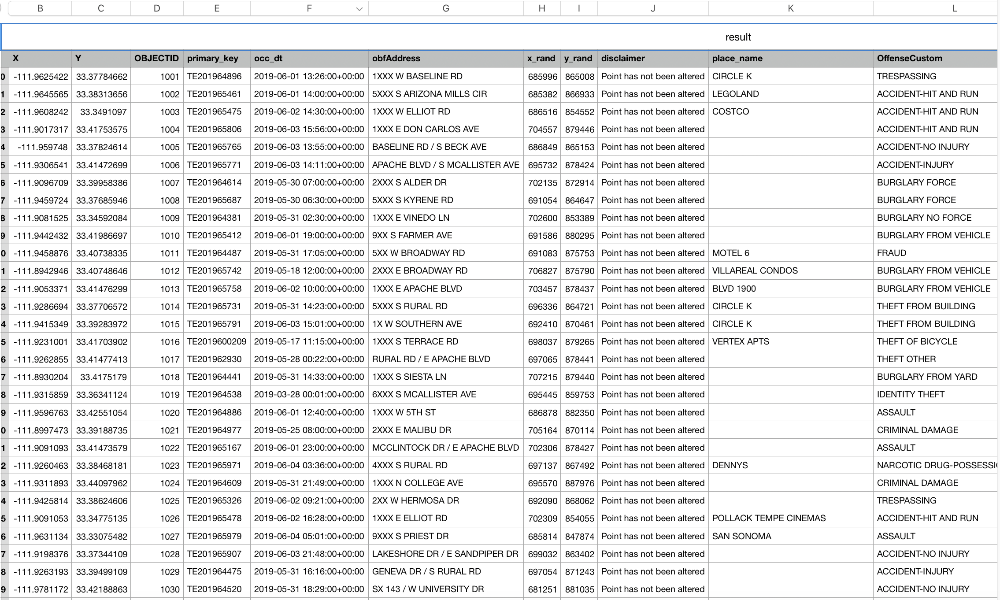

Introduction
미국의 애리조나(AZ)주의 Tempe시는 경찰이 General Crime Data를 제공하고 있습니다. 저는 이 데이터를 활용하여 Tempe시의 경찰이 효과적으로 범죄를 예방할 수 있는 방법을 찾고 싶습니다.General Crime Data.csv
 [시각화에 사용될 데이터 원본 csv 내용]
데이터는 지리 정보를 나타내는 X, Y와 사건 내용에 대한 OffenseCustom, 날짜 데이터에서 시간만 뺀 hour, 복잡한 OffenseCustom에서 특정 범죄만 나누는 isViolentCrime, isSexualCrime, isTheftCrime, isMurderCrime 등으로 이루어져 있습니다.
Set Problem & Hypothesis
저는 이 데이터를 분석하여 Tempe 경찰의 순찰 경로를 최적화할 수 있다고 판단했습니다. 데이터 분석을 통해 범죄에 노출되기 쉬운 시간과 장소를 선정하고, 이를 경찰 업무에 반영한다면 Tempe 시민들은 더욱 안전할 생활을 영위할 수 있을 것입니다.따라서 이 문제를 해결하기 위해 몇개의 가설을 설정하였습니다.
- 범죄는 해가 떠있는 시간보다는 해가 진 후 늦은 시간에 많이 발생할 것입니다.
- 강력 범죄의 경우 늦은 시간과 도심에서 일어날 확률이 높을것입니다.
- 성범죄의 경우 늦은 시간과 주택가 및 호텔/모텔에서 일어날 확률이 높을것입니다.